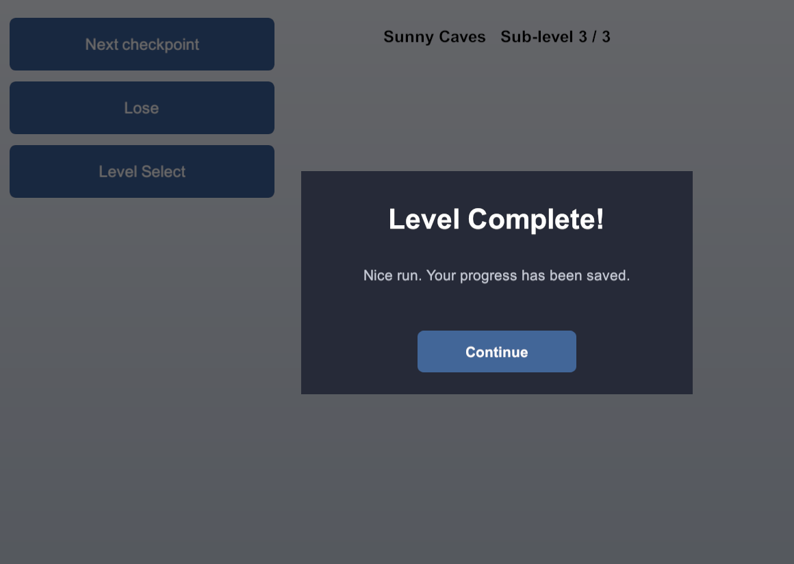

Installation & Demo
Requirements
Unity 6.0 or newer. The package is built and maintained on Unity 6 and works across its versions, with nothing else required to start saving.
Platform support
| Desktop (Windows, macOS, Linux) | Fully supported, every local manager. |
| Mobile (iOS, Android) | Fully supported. Saves live in the app sandbox; the automatic save also fires on focus loss and pause. |
| WebGL | Fully supported, every local manager. Writes are flushed to the browser's IndexedDB. |
| Consoles | Console save APIs are proprietary (under a per-platform NDA), so the package cannot ship managers for them; you write a small custom manager against your console's SDK (see Extending). |
| Cloud / server | Any platform with networking, through Server (HTTP) or Cloud Save (UGS); see Cloud & Remote. |
Installing
- Import Persistent Asset from the Asset Store (Window > Package Manager > My Assets, or the Asset Store page's "Import").
- Nothing more to set up: the first persistent object can be created right away, as in Getting Started.
- For a networked or No-Code module, install its dependency (next section); the module then compiles automatically, with no define to set.
Everything lives under one Assets/Persistent Asset folder.
Optional modules
Each module below stays inert until its dependency is in the project. Once it is, the module compiles in on its own (no scripting define, no setup).
| Cloud Save (UGS) the Cloud Save (UGS) manager |
Requires com.unity.services.cloudsave (Unity Gaming Services Cloud Save). Signing the player in to UGS Authentication is your game's job. See Cloud & Remote. |
| No-Code Input persistable input bindings |
Requires com.unity.inputsystem (the Input System). See No-Code. |
| No-Code Localization persistable selected locale |
Requires com.unity.localization (the Localization package). See No-Code. |
| Newtonsoft serializer the Newtonsoft JSON serializer |
Requires com.unity.nuget.newtonsoft-json (Newtonsoft Json). See Serializers. |
| Odin serializer the Odin serializer |
Requires Odin, either the one bundled with Odin Inspector or the free standalone Odin Serializer. See Serializers. |
The demo
The package ships a complete, playable sample: a main menu, profile (save-slot) selection, a level select and a gameplay scene, all persisting through Persistent Asset.
Open [PA 0] Demo_MainMenu (under Persistent Asset/Demo/Scenes) and
press Play. The demo flows through the other scenes on its own. Make some progress, stop,
press Play again, and the profile, options and progress are restored. The on-screen
In Game Logs Viewer shows each load and save as it happens (see
Debugging).

Each scene demonstrates a different part of the package:
- [PA 0] Demo_MainMenu: the entry point and bootstrap flow.
- [PA 1] Demo_ProfileSelect: multiple save slots and a save-select screen, built on a slot registry (
ProfileRegistry) that lists profiles and thumbnails without loading them. - [PA 2] Demo_LevelSelect: per-profile progression, and an options menu showing per-field reset and Snapshot/Restore cancel.
- [PA 3] Demo_Game: gameplay that saves progress and achievements as you play.
The demo's achievements persist through the Server (HTTP) manager, talking to a bundled mock server: a real local HTTP backend running in every scene, so the remote save flow runs with no external server to set up. An on-screen overlay starts and stops it and resets its data, which exercises the offline cache and reconnection (it starts offline). A mock HTTP server cannot run in a WebGL build, so there the demo backs the achievements with a local Prototype manager instead, an example of choosing a persistence backend per platform.
The demo's scripts (under Demo/Scripts) are a reference for wiring the package
into a real project. Everything is self-contained under
Assets/Persistent Asset/Demo, and nothing else depends on it.
Delete the Demo folder before shipping your own game. The demo's achievement assets are global save assets, so a build made with the folder still present ships them too. Nothing else depends on the folder, so it can be deleted at any time.